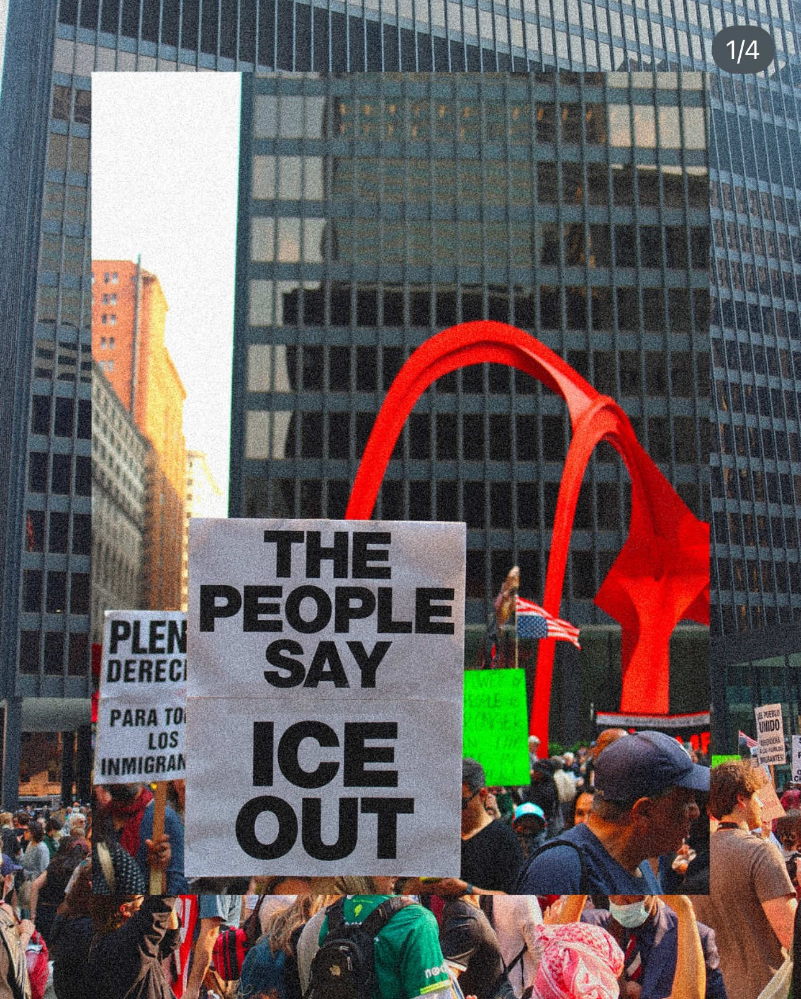
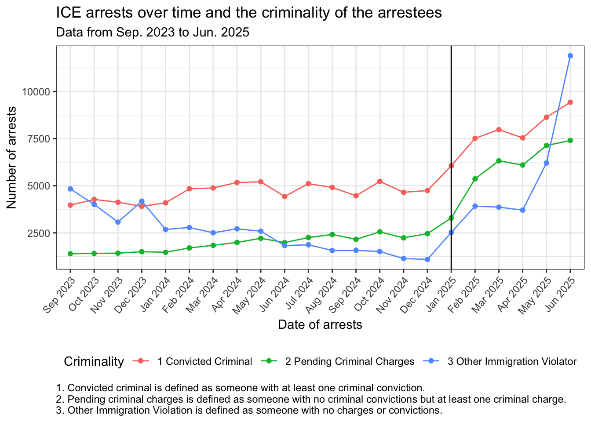
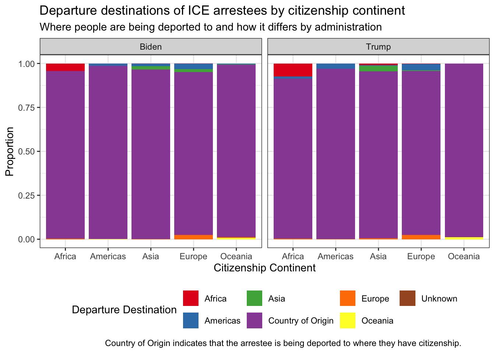
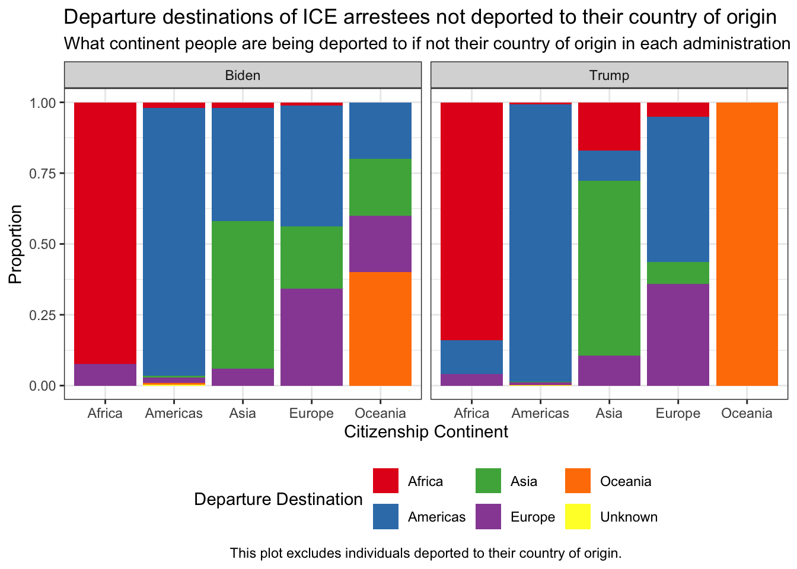
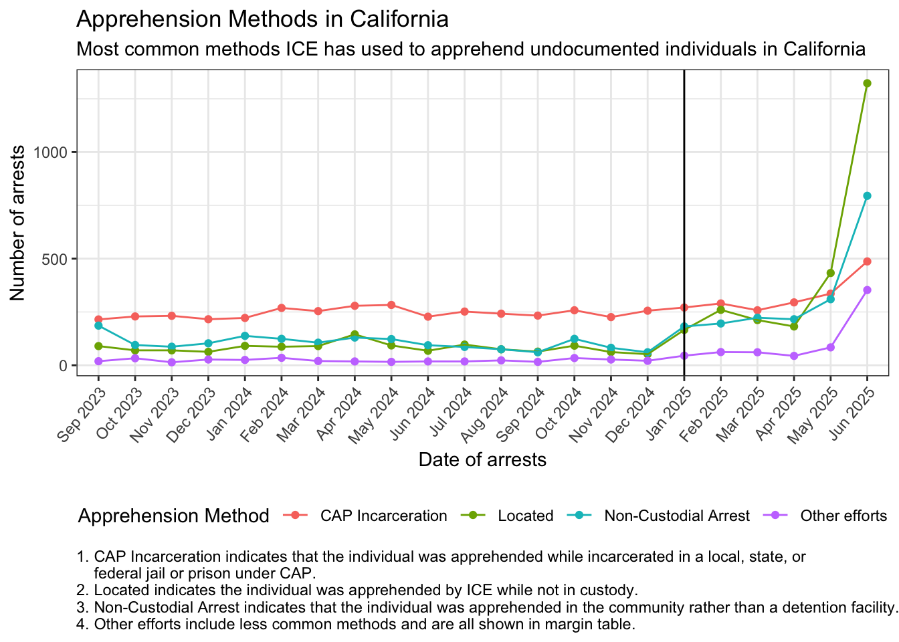
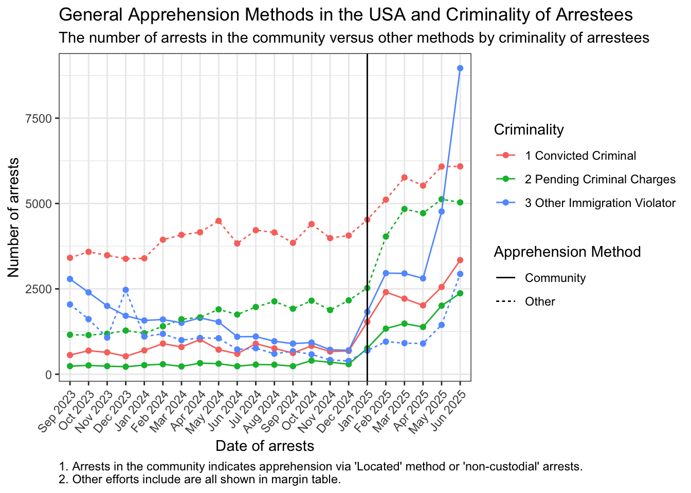
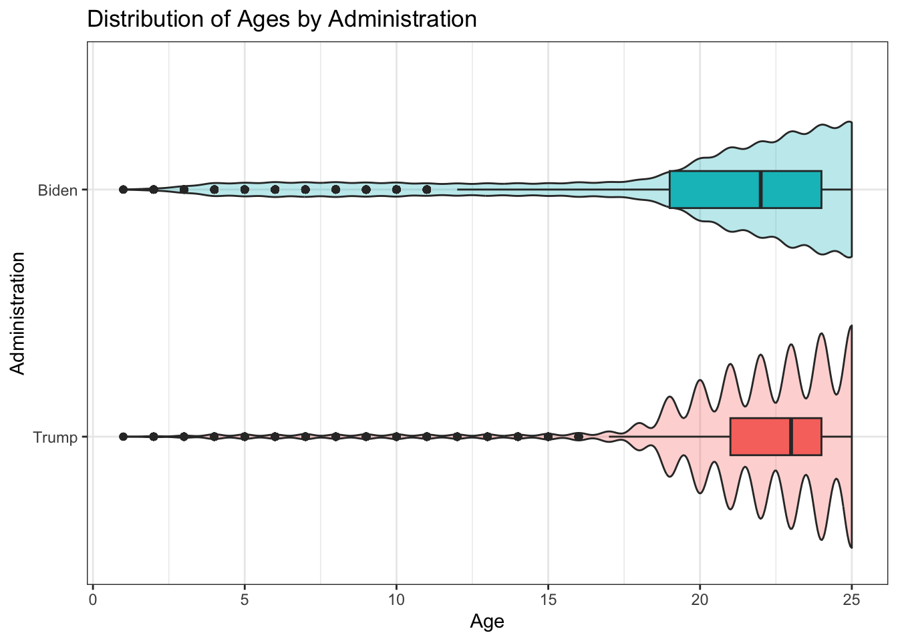

Example Analysis
Introduction
In this analysis, I will use data pertaining to ICE Arrests from Sep. 2023 to late Jul. 2025. The question I aim to answer is if recent arrests (January 2025 – present)target undocumented individuals with a criminal history, and how they compare to arrests from before January 2025. The target audience is the general public, with anyone interested in seeing how ICE is operating under the current presidential adminstration in comparison to the last one.
The data comes from The Deportation Data Project and its data dictionary can be found here.
Data Wrangling
library(tidyverse)
library(countrycode)
arrests_raw <- readxl::read_xlsx("./files-docs/arrests-latest.xlsx")arrests <-
arrests_raw |>
mutate(
apprehension_date =
as.Date(apprehension_date),
apprehension_date_my =
factor(x = format(apprehension_date, "%b %Y"),
levels = unique(format(apprehension_date, "%b %Y"))),
administration =
if_else(apprehension_date >= as.Date("2025-01-20"), "Trump", "Biden"),
departure_country_match =
if_else(departure_country == citizenship_country, "Yes", "No"),
departure_country_match =
factor(departure_country_match),
citizenship_country = str_to_title(citizenship_country),
departure_country = str_to_title(departure_country),
citizenship_continent =
countrycode(sourcevar = citizenship_country,
origin = "country.name.en",
destination = "continent",
nomatch = NULL),
departure_continent =
countrycode(sourcevar = departure_country,
origin = "country.name.en",
destination = "continent",
nomatch = NULL),
departure_continent =
case_when(
departure_continent == "Kosovo" ~ "Europe",
departure_continent == "Saba" ~ "Americas",
departure_continent == "Cocos Islands" ~ "Oceania",
departure_continent == "European Union" ~ "Europe",
TRUE ~ departure_continent),
citizenship_continent =
case_when(
citizenship_continent == "Kosovo" ~ "Europe",
citizenship_continent == "Czechoslovakia" ~ "Europe",
citizenship_continent == "Yugoslavia" ~ "Europe",
citizenship_continent == "Serbia And Montenegro" ~ "Europe",
TRUE ~ citizenship_continent),
departure_destination =
case_when(
departure_country_match == "Yes" ~ "Country of Origin",
TRUE ~ departure_continent)) |>
filter(duplicate_likely == FALSE,
apprehension_date_my != "Jul 2025") |>
select(
apprehension_date_my, apprehension_criminality, apprehension_state, apprehension_method,
citizenship_continent, departure_continent, departure_destination,
administration, birth_year
)
Note
The data does not include the full month of July. Therefore, I have excluded data from July 2025 in my analysis.
Data Visualization
Criminality of Arestees
arrests |>
filter(apprehension_date_my != "Jul 2025") |>
group_by(apprehension_date_my, apprehension_criminality) |>
summarise(count = n()) |>
ggplot(aes(x = apprehension_date_my, y = count,
color = apprehension_criminality, group = apprehension_criminality)) +
geom_point() +
geom_line() +
theme_bw() +
theme(plot.caption = element_text(hjust = 0),
axis.text.x = element_text(angle = 50, hjust=1),
legend.position = "bottom") +
labs(title = "ICE arrests over time and the criminality of the arrestees",
subtitle = "Data from Sep. 2023 to Jun. 2025",
caption = "1. Convicted criminal is defined as someone with at least one criminal conviction.\n2. Pending criminal charges is defined as someone with no criminal convictions but at least one criminal charge.\n3. Other Immigration Violation is defined as someone with no charges or convictions.",
x = "Date of arrests",
y = "Number of arrests",
color = "Criminality") +
geom_vline(xintercept = "Jan 2025")
Departure Destination of Arrestees
I am interested in seeing where ICE arrestees are being deported under the two different administrations, particularly whether individuals deported to countries other than their country of origin are being sent to destinations within the same continent or not.
Four individuals with citizenship from Yugoslavia were deported to other European countries since the nation no longer exists. The destinations were Serbia, North Macedonia, and Montenegro (two cases), all of which are part of what was once Yugoslavia. These cases were categorized under the “Europe” continent for this analysis and not under “Country of Origin”.
Note
The data dictinionary does not specify whether missing values in departure_country indicate that the arrestee was not deported or if the data was simply not recorded. Therefore, analyses involving departure destinations only include cases with non-missing departure_country values.
| Biden (N=90478) |
Trump (N=67669) |
|
|---|---|---|
| Departure Destination | ||
| Africa | 49 (0.1%) | 44 (0.1%) |
| Americas | 1156 (1.3%) | 2011 (3.0%) |
| Asia | 54 (0.1%) | 39 (0.1%) |
| Country of Origin | 89151 (98.5%) | 65532 (96.8%) |
| Europe | 54 (0.1%) | 38 (0.1%) |
| Oceania | 11 (0.0%) | 3 (0.0%) |
| Unknown | 3 (0.0%) | 2 (0.0%) |
arrests |>
filter(!is.na(departure_continent)) |>
ggplot(aes(x = citizenship_continent, fill = departure_destination)) +
geom_bar(position = "fill") +
facet_wrap(~ administration, ncol = 2) +
theme_bw() +
theme(plot.caption = element_text(hjust = 0.7),
legend.position = "bottom") +
labs(title = "Departure destinations of ICE arrestees by citizenship continent",
subtitle = "Where people are being deported to and how it differs by administration",
caption = "Country of Origin indicates that the arrestee is being deported to where they have citizenship.",
x = "Citizenship Continent",
y = "Proportion",
fill = "Departure Destination") +
scale_fill_brewer(palette = "Set1")
arrests |>
filter(
!is.na(departure_continent),
departure_destination != "Country of Origin") |>
ggplot(aes(x = citizenship_continent, fill = departure_destination)) +
geom_bar(position = "fill") +
facet_wrap(~ administration, ncol = 2) +
theme_bw() +
theme(plot.caption = element_text(hjust = 0.5),
legend.position = "bottom") +
labs(title = "Departure destinations of ICE arrestees not deported to their country of origin",
subtitle = "What continent people are being deported to if not their country of origin in each administration",
caption = "This plot excludes individuals deported to their country of origin.",
x = "Citizenship Continent",
y = "Proportion",
fill = "Departure Destination") +
scale_fill_brewer(palette = "Set1")
Methods of Apprehension
California has recently seen a surge in ICE arrests since January 2025. I am interested in seeing the different methods of apprehension used in this state, and how these methods have changed over time.
In California, the three most common methods of apprehension for undocumented individuals are efforts to locate individuals, non-custodial arrests, and the Criminal Alien Program (CAP). The next most common is an unspecified “other efforts,” which was grouped together with less common methods of apprehension for the purpose of visualization.
arrests |>
filter(apprehension_state == "CALIFORNIA") |>
count(apprehension_method, sort = TRUE) |>
rename(`Apprehension Method` = apprehension_method,
Count = n) |>
knitr::kable()| Apprehension Method | Count |
|---|---|
| Located | 3885 |
| Non-Custodial Arrest | 3597 |
| CAP Federal Incarceration | 3374 |
| CAP State Incarceration | 1365 |
| CAP Local Incarceration | 1092 |
| Other efforts | 579 |
| Probation and Parole | 251 |
| Patrol Border | 45 |
| Other Agency (turned over to INS) | 37 |
| Other Task Force | 26 |
| Worksite Enforcement | 20 |
| Law Enforcement Agency Response Unit | 12 |
| Anti-Smuggling | 10 |
| Inspections | 10 |
| Organized Crime Drug Enforcement Task Force | 6 |
| 287(g) Program | 4 |
| ERO Reprocessed Arrest | 4 |
| Boat Patrol | 3 |
| Criminal Alien Program | 2 |
| Patrol Interior | 2 |
| Transportation Check Aircraft | 2 |
arrests |>
mutate(
apprehension_method = case_when(
str_detect(apprehension_method, "CAP") ~ "CAP Incarceration",
apprehension_method == "Non-Custodial Arrest" ~ "Non-Custodial Arrest",
apprehension_method == "Located" ~ "Located",
TRUE ~ "Other efforts")) |>
filter(apprehension_state == "CALIFORNIA") |>
group_by(apprehension_date_my, apprehension_method) |>
summarise(count = n()) |>
ggplot(aes(x = apprehension_date_my, y = count,
color = apprehension_method, group = apprehension_method)) +
geom_point() +
geom_line() +
theme_bw() +
theme(
axis.text.x = element_text(angle = 50, hjust=1),
plot.caption = element_text(hjust = 0),
legend.position = "bottom") +
labs(title = "Apprehension Methods in California",
subtitle = "Most common methods ICE has used to apprehend undocumented individuals in California",
caption = "1. CAP Incarceration indicates that the individual was apprehended while incarcerated in a local, state, or \n federal jail or prison under CAP.\n2. Located indicates the individual was apprehended by ICE while not in custody.\n3. Non-Custodial Arrest indicates that the individual was apprehended in the community rather than a detention facility.\n4. Other efforts include less common methods and are all shown in margin table.",
x = "Date of arrests",
y = "Number of arrests",
color = "Apprehension Method") +
geom_vline(xintercept = "Jan 2025")`summarise()` has grouped output by 'apprehension_date_my'. You can override
using the `.groups` argument.
arrests |>
mutate(
apprehension_method = case_when(
apprehension_method %in% c("Non-Custodial Arrest", "Located") ~ "Community",
TRUE ~ "Other")) |>
group_by(apprehension_date_my, apprehension_method,apprehension_criminality) |>
summarise(count = n()) |>
ggplot(
aes(x = apprehension_date_my, y = count,
color = apprehension_criminality, linetype = apprehension_method,
group = interaction(apprehension_method, apprehension_criminality))) +
geom_point() +
geom_line() +
theme_bw() +
theme(
axis.text.x = element_text(angle = 50, hjust=1),
plot.caption = element_text(hjust = 0),
legend.position = "right") +
labs(title = "General Apprehension Methods in the USA and Criminality of Arrestees",
subtitle = "The number of arrests in the community versus other methods by criminality of arrestees",
caption = "1. Arrests in the community indicates apprehension via 'Located' method or 'non-custodial' arrests. \n2. Other efforts include are all shown in margin table.",
x = "Date of arrests",
y = "Number of arrests",
color = "Criminality",
linetype = "Apprehension Method") +
geom_vline(xintercept = "Jan 2025")`summarise()` has grouped output by 'apprehension_date_my',
'apprehension_method'. You can override using the `.groups` argument.
Age Distribution of Arestess
# | column: margin
arrests |>
filter(birth_year>=2000) |>
mutate(relative_age = 2025 - birth_year) |>
rename(Administration = administration) |>
group_by(Administration) |>
summarise(`Median Age` = median(relative_age)) |>
knitr::kable()| Administration | Median Age |
|---|---|
| Biden | 22 |
| Trump | 23 |
arrests |>
filter(birth_year >= 2000) |>
mutate(
relative_age = 2025 - birth_year,
administration = factor(administration, levels = c("Trump", "Biden"))) |>
ggplot(aes(x = relative_age, y = administration, fill = administration)) +
geom_violin(alpha = 0.3) +
geom_boxplot(width = 0.15) +
theme_bw() +
theme(legend.position = "none") +
labs(title = "Distribution of Ages by Administration",
x = "Age",
y = "Administration"
)
Conclusion
Since January 2025, the number of ICE arrests has notably increased across the U.S. There has been a shift in the criminality of arrestees, with a larger number of individuals with no criminal history being more targeted compared to previous periods. The number of arrests of individuals with criminal convictions or pending charges has remained relatively stable within each administration.
In the news, reports have highlighted cases of people being deported to countries other than their own under the current administration. Across both administrations, I saw that the majority of arrestees are still being deported to their country of origin, and there is no visible difference. When examining the proportions of individuals deported to other destinations, there is a 1.7% difference between the two administrations (Biden: 1.5%, Trump: 3.2%).
News reports have also highlighted an increase in arrests in California. When examining the methods of apprehension used in the state, there has been a noticeable rise in non-custodial arrests and those using the “Located” method since January 2025. Historically, since September 2023, ICE primarily relied on CAP incarceration to apprehend undocumented individuals in California, but this changed in May 2025.
I then decided to examine apprehension methods across the USA. According to the Deportation Data Project, the terms “Located” and “Non-Custodial Arrest” refer to arrests in the community, such as raids. I am interested in analyzing how these community-based apprehension methods have been used, particularly with respect to the criminality of the arrestees. Since January 2025, community-based apprehensions of individuals with no criminal history have increased drastically, while other methods have remained relatively stable within the current administration. In June 2025, ICE’s use of these community-based methods to apprehend non-criminal individuals surpassed all other combinations of apprehension method and criminality.
Finally, I examined differences in the age distribution of arrestees under the two administrations, focusing on younger individuals. Among arrestees under 25, there does not appear to be a noticeable difference in the distribution between administrations. The median age for the Biden administration is slightly lower at 22 years, compared to 23 years for the Trump administration.
Functions Used
- dplyr:
mutate(),filter(),if_else(),case_when(),select(),group_by(),summarise(),rename(),count() - ggplot2:
ggplot(),aes(),geom_point(),geom_line(),theme_bw(),theme(),labs(),geom_vline(),scale_fill_brewer(),geom_bar(),facet_wrap()